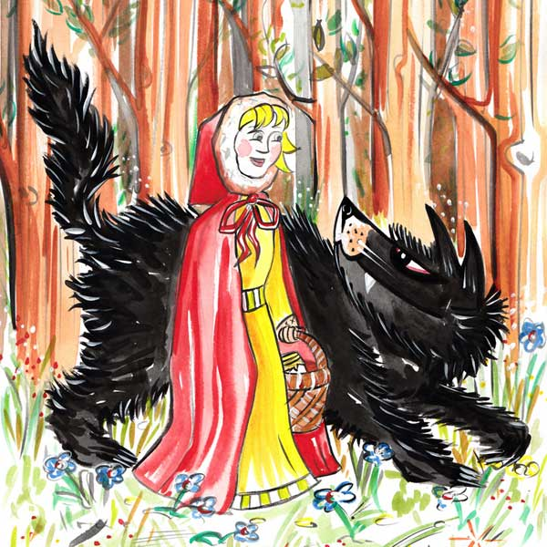

“I am going to see my grandmother.”
“Does she live far off?” said the wolf.
“It is beyond that mill you see there”.
It was not long before the wolf arrived at the old woman’s house. He knocked at the door.
Tap, tap, tap. “Who’s there?”
“Your grandchild, Little Red Riding Hood,” replied the wolf, faking her voice.
The good grandmother called out,“Pull the string, and the latch will go up.”
The wolf pulled the string and the door opened, and then he immediately fell upon the good woman and ate her up in a moment.
|
 |